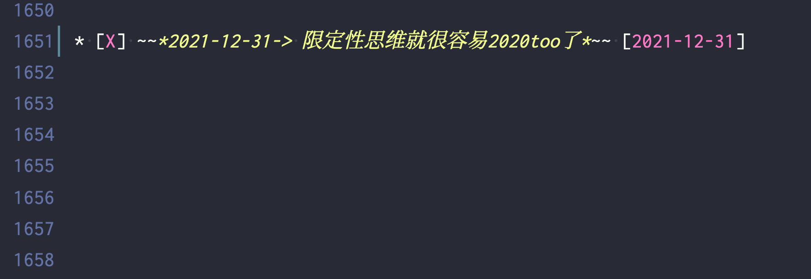

2022还是2020？
王福强
2021-12-31
看似玩笑，实则看你怎么看。
昨天正好跟佩信集团IT团队做了个私享，谈了下管仲的四句话：
不为不可成 不求不可得 不处不可久 不行不可复
大多数人实际上只会理解一层意思，少数人或许可以解读两层意思，但应该只有极少数人可以辩证解读、灵活运用。
这背后的差异在哪儿？ 思维模式。
所有的外物都是每个人心镜的投射，你的心是什么状态，所有外物映照出来的就是什么状态，跟外物无关，只与你的本心有关。 你可以说这很唯心，或许吧，但人其实就是唯心的，你接受亦或否定，其实也是本心的轮转，不是吗？
还记得我之前经常放出来的那个问题吗？ “你是探索性思维，还是限定性思维？”
不同的选择，注定不同的结果， 但我又无意于说得太开，因为这东西本来就是一个开放性的问题，最有意思的反而是不同个体的反映。
有的人因为相信所以看见，有的人只有看见才会相信，这是差异，更是差距，而这种差距，本心即是本源。

马上2022年了， 其实不想写这段文字，但早上手贱写了TODO备注项，所以，还是写下几句，算是一个了结，也是一个展望吧！
我的年度TODO LIST也该翻篇了，最后， 预祝大家新年快乐～

「为AI疯狂」星球上，扶墙老师正在和朋友们讨论有趣的AI话题，你要不要⼀起来呀？^-^
这里
- 不但有及时新鲜的AI资讯和深度探讨
- 还分享AI工具、产品方法和商业机会
- 更有体系化精品付费内容等着你，加入星球(https://t.zsxq.com/0dI3ZA0sL) 即可免费领取。(加入之后一定记得看置顶消息呀！)

存量的时代，省钱就是赚钱。
在增量的时代，省钱其实是亏钱。
避坑儿是省钱的一种形式，更是真正聪明人的选择！
弯路虽然也是路，但还是能少走就少走，背后都是高昂的试错成本。